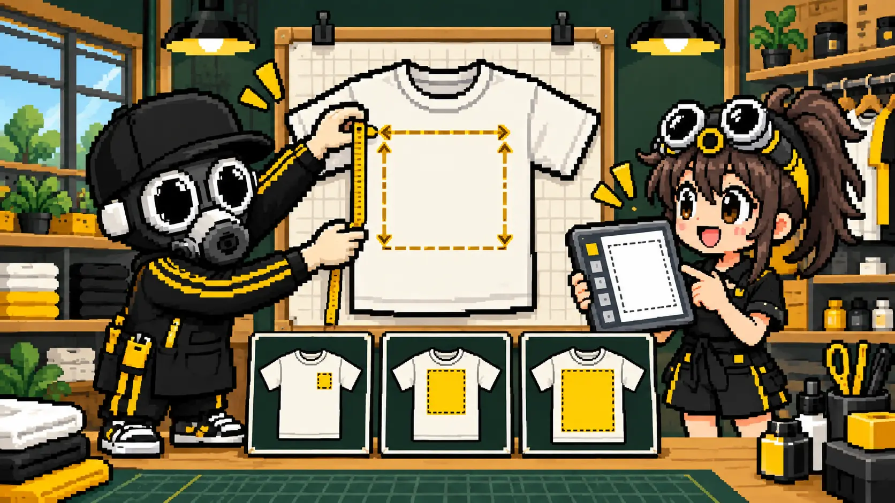
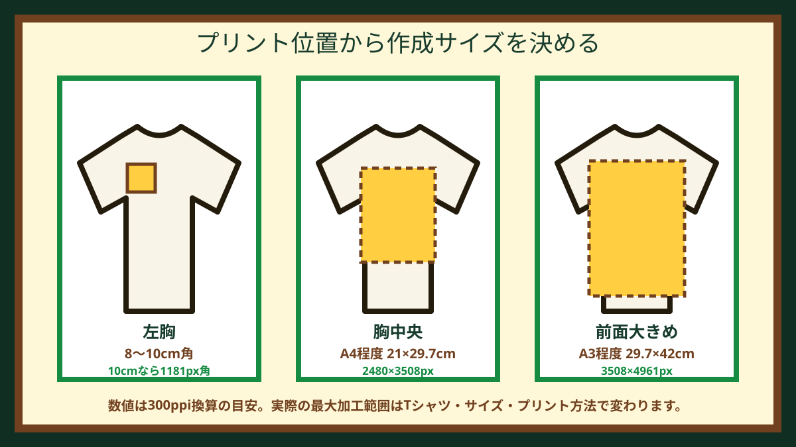
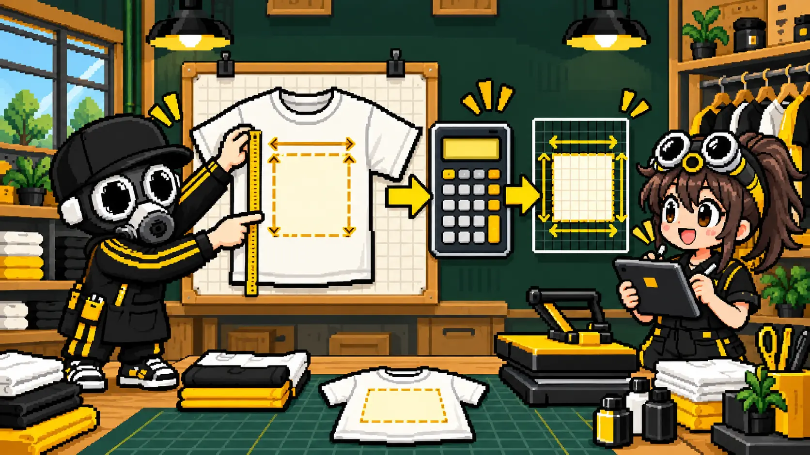
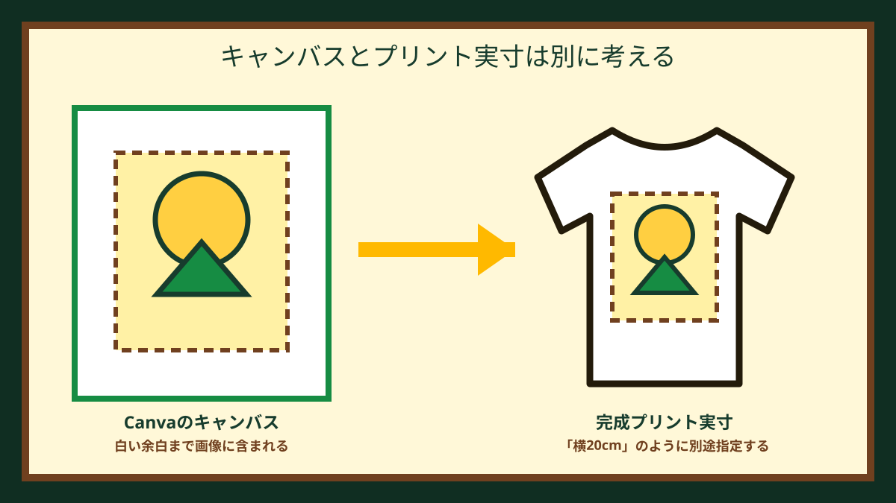
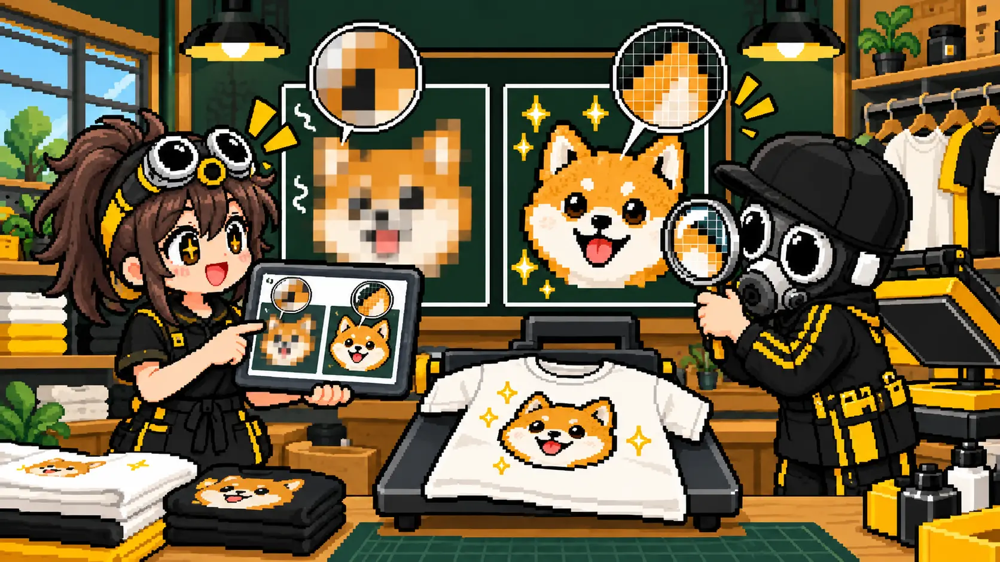

結論：最初に完成時の横幅をcmで決めます
CanvaでTシャツデザインを作るときは、テンプレート名から決めるのではなく、まず完成したプリントを横何cmにしたいかを決めます。その実寸をもとにカスタムサイズを設定すれば、拡大による画質不足や、想像より小さい・大きいといった失敗を減らせます。
迷ったときの出発点は、左胸なら8〜10cm角、胸中央ならA4程度、前面を大きく使うならA3程度です。ただし、Tシャツのサイズ、ポケットや縫い目、プリント方法、加工機の最大範囲で変わります。最終的には入稿先へ「胸中央・横20cm」のように実寸を伝えて確認してください。

位置別：Canva作成サイズ早見表

| 用途 | 完成実寸の目安 | 300ppi換算 | Canva設定例 |
|---|---|---|---|
| 左胸ワンポイント | 8×8〜10×10cm | 945〜1181px角 | 100×100mm |
| 胸中央・小さめ | 15×15〜20×20cm | 1772〜2362px角 | 200×200mm |
| 胸中央・A4程度 | 21×29.7cm | 2480×3508px | 210×297mm |
| 前面大きめ・A3程度 | 29.7×42cm | 3508×4961px | 297×420mm |
「A4・A3」は大きさを共有しやすくする目安です。紙をそのままTシャツへ印刷するという意味ではありません。
サイズは3つの順番で決めます
プリント位置を決める
左胸、胸中央、背中、袖など、最初に場所を決めます。位置によって使える最大範囲が異なります。
完成実寸をcmで決める
「左胸で横9cm」「胸中央で横20cm」のように指定します。縦横比はデザインに合わせます。
Canvaのサイズへ置き換える
mm・cmで同じ実寸を設定するか、300ppiを目安にpxへ換算します。
加工可能範囲を確認する
最小サイズから最大サイズまで、同じデザインが収まるかプリント店へ確認します。

cmをpxへ換算する方法
画像の細かさはppi（1インチあたりのピクセル数）で考えます。Tシャツ用データでは300ppiを安全側の目安にすることが多いため、この記事の早見表も300ppiで計算しています。
計算式
必要px ＝ 完成サイズ（cm）÷ 2.54 × 300
例：横20cmなら、20 ÷ 2.54 × 300 ≒ 2362pxです。
ただし300ppiは絶対条件ではありません。プリント方法、見る距離、絵柄の内容によって必要解像度は変わります。線画やロゴは輪郭の作り方、写真は元画像の画素数が特に重要です。
A4とA3、どちらを選ぶ？
胸中央の標準サイズ
約21×29.7cm。大人用Tシャツの胸中央で使いやすい目安です。小さいサイズにも収めやすく、文字・ロゴ・イラストのバランスを取りやすい大きさです。
前面を大きく見せたい
約29.7×42cm。大きなグラフィック向けですが、小さいTシャツでは幅や縫い目に干渉する場合があります。最大加工範囲の確認が必要です。
同じA4でも、横長のロゴと縦長のイラストでは完成時の見え方が違います。ページ全体の寸法だけでなく、実際の絵柄が占める横幅を確認してください。
Canvaのページサイズとプリント実寸は別です

CanvaのページをA4にしても、中央のロゴがページ幅の半分ならロゴ自体はA4幅ではありません。プリント店へは「ページはA4」「絵柄は横15cmで印刷」のように、キャンバスと完成実寸を分けて伝えます。
背景を印刷しない場合は、できるだけ絵柄の外側に不要な余白を残さず書き出します。透明背景が使えない場合は、元データと「白背景は印刷しない」という希望を一緒に送ってください。
写真はキャンバスより元画像を確認します
Canvaのページを大きく設定しても、配置した写真の元画像が小さければ高画質にはなりません。スマホのスクリーンショット、SNSから保存した画像、メッセージアプリで圧縮された画像は、拡大時に粗さが出やすくなります。

粗い画像の判断方法は、低解像度の画像でもTシャツへプリントできるかで詳しく解説しています。
書き出しはPNGかPDF Print
背景を透明にしたい
ロゴ、イラスト、写真の切り抜き向けです。背景透過は利用プランによって条件が異なります。白背景を残すか消すかを必ず確認します。
文字・図形・配置を保ちたい
文字や図形中心のデータ、A3相当など大きな実寸設定の候補です。画像素材の解像度不足まで自動で直るわけではありません。
Canva公式ヘルプでは、カスタムサイズにpx・in・mm・cmを使用でき、印刷向け形式としてPDF Printを選択できます。実際に受け付けられる形式はプリント店ごとに違うため、入稿先の案内を優先してください。
Tシャツプリントに塗り足しは必要？
一般的な左胸・胸中央・背中プリントは、紙の名刺やチラシのように仕上がり位置で断裁しないため、通常は紙印刷と同じ塗り足しを付けません。絵柄の外側に必要なのは、切り落とし用の背景ではなく、プリント機や縫い目に近づけすぎない安全な配置です。
ただし、昇華転写による全面プリント、縫製前の生地へ印刷する総柄、特殊な製品は別です。この場合は加工店の専用テンプレートと塗り足し指定を使用してください。Canvaの一般的な印刷物向け塗り足し設定を、そのままTシャツへ流用しないようにします。
Canvaで作り始める前の確認
- プリント位置を決めた
- 完成時の横幅をcmで決めた
- 小さいTシャツにもデザインが収まるか考えた
- 写真は配置前の元画像を残した
- 背景を印刷するか透明にするか決めた
- PNG・PDF Printのどちらを入稿先が受け付けるか確認した
- サイズが混在する場合の見え方を確認した
Canvaの具体的な操作手順は、CanvaでTシャツを作る7ステップで画面付きで解説しています。プリント位置そのものに迷う場合は、Tシャツのプリントサイズと位置の決め方から確認してください。
CanvaのTシャツ作成サイズでよくある質問
CanvaでTシャツデザインを作るサイズは何pxですか？
完成実寸から決めます。10cm角なら約1181px角、A4相当なら2480×3508pxが300ppi換算の目安です。プリント店に指定がある場合は、そちらを優先してください。
TシャツデザインはA4とA3のどちらがよいですか？
胸中央の標準的な大きさならA4程度、前面を大きく使うならA3程度が目安です。小さいTシャツではA3幅が収まらない場合があります。
PNGとPDF Printはどちらが印刷向きですか？
背景を透明にしたロゴやイラストはPNG、文字や図形中心で配置を保ちたい場合はPDF Printが候補です。迷う場合は両方を用意します。
Canvaで塗り足しは必要ですか？
通常の胸・背中プリントでは、紙の断裁物のような塗り足しは一般に必要ありません。全面印刷や特殊加工は専用テンプレートに従います。
画像をCanvaで大きくすれば高画質になりますか？
なりません。小さい元画像を拡大しても元の画素数は増えません。配置前の元画像を確認し、できるだけ大きなデータを使用します。
確認したCanva公式資料
MISSION COMPLETE!
サイズが合っているか無料確認
Canvaデータと「プリント位置・希望横幅・Tシャツ色・枚数」を送ってください。作成サイズ、画質、背景、入稿形式を確認します。
Canvaデータを無料確認 ▶相談LINEでデータを送る▶実際のウェアプリント相談・制作経験とCanva公式ヘルプをもとに確認しています。最終更新：2026年9月28日 運営者・編集方針